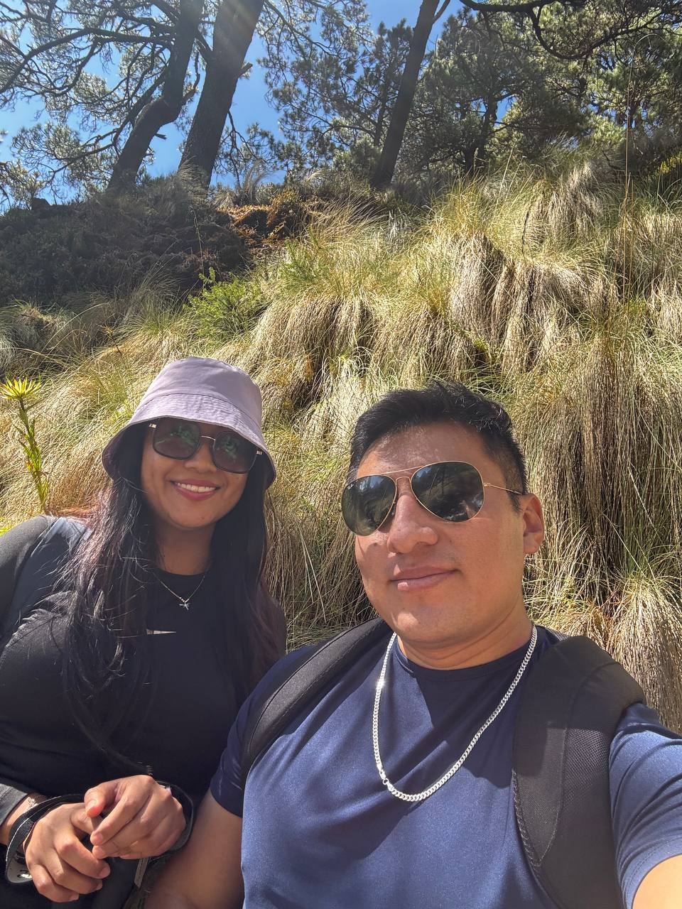
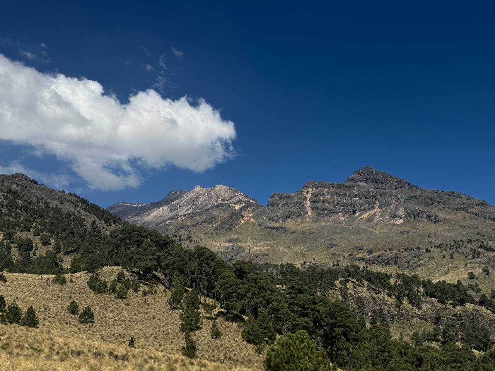
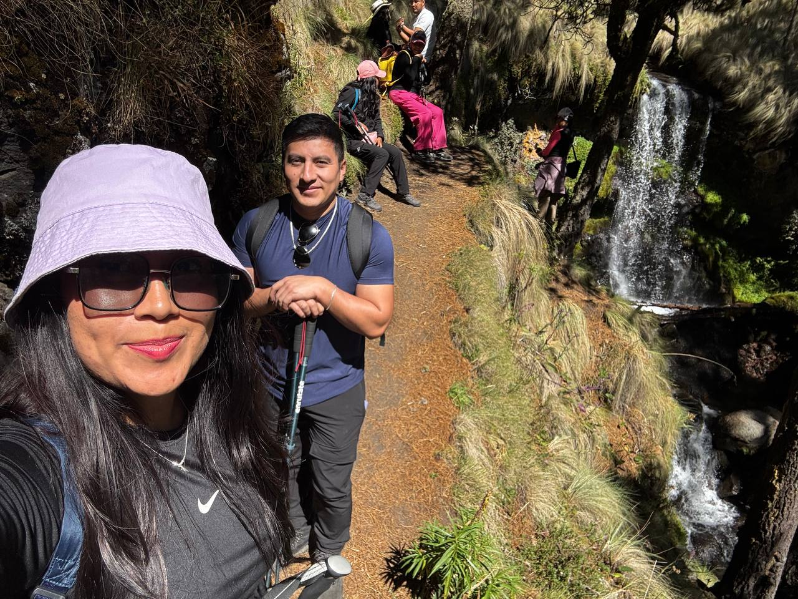

commit 0006
Date: 9 Nov 2025
🟡 Manantiales de Iztaccíhuatl
🟢 Git Message
feat: first long-distance trip completed
⚪ Story
Después de varias salidas, llegó el momento de hacer nuestro primer viaje un poco más largo.
Ese día fuimos a los manantiales de Iztaccíhuatl.
Recuerdo el camino, las conversaciones y la emoción de conocer un lugar nuevo.
Entre todo lo que pasó ese día, hay pequeños detalles que terminaron quedándose mucho más grabados que cualquier paisaje.
Compartimos una cobija.
Compartimos dos manzanas.
Compartimos una botella de agua.
Te pedí que me grabaras un video que nunca salió jajaja, lo recuerdas?
Y, casi sin darme cuenta, también comenzaste a convertirte en mi fotografo personal.
Tomamos fotografías.
Caminamos.
Disfrutamos el lugar sin prisa.
No hubo necesidad de hacer algo extraordinario.
A veces bastaba con estar ahí.
Con el paso del tiempo entendí que ese viaje no solo nos permitió conocer un lugar nuevo.
También nos permitió sentirnos cada vez más cómodos compartiendo el camino.
Y, sin darnos cuenta...
este proyecto acababa de descubrir que los recuerdos más importantes casi siempre están escondidos en los detalles más pequeños.
🟣 Developer Notes
• First long-distance trip completed.
• Comfort level increased.
• Shared adventures becoming natural.
🟢 Impact on Project
First long-distance memory archived.
Trust level increased.
New travel experiences unlocked.
🟢 Commit Status
✔ Completed
✔ Reviewed
✔ Ready for Release
🖼 Recuerdos

Los kilómetros pasaron rápido cuando el camino estuvo lleno de conversaciones.

Hay paisajes que impresionan por su belleza… y otros porque siempre te hacen querer volver.

Entre senderos, agua y risas, el destino terminó siendo solo una parte del viaje.